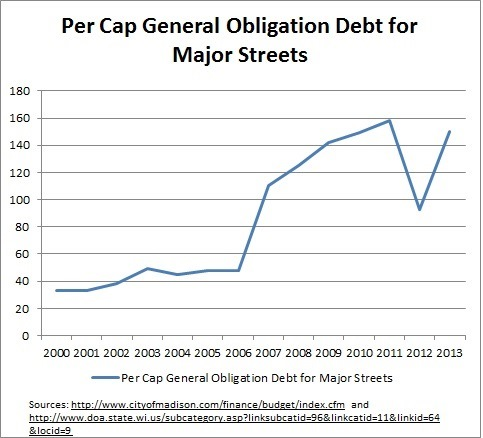

The Bus Stops Here: Budgeting a road map for the future
By Susan De Vos | Wed. 5/15/2013
We'll be the first generation in the history of the planet that drove to the poorhouse in an automobile Will Rogers,
1931
The essentials seem universal enough whether it is a matter of budgeting a monthly income, a weekly allowance or
anything similar. Money spent on a house, car payment, or ice cream cannot also be spent on a new carpet or a DVD.
You have to make priorities.
While a city or state budget may have many complicating features including a bifurcation into capital and operating
sub-budgets, the essence stays the same, and you either stay within budget or you borrow, promising to not only pay
the principal in future monthly allotments but also the interest on that debt.
Why should Madisons budget be a concern to the Bus Advocates? Because our bus system is currently an agency of
the city of Madison, and Madisons mayor Paul Soglin has asked every city agency including Metro Transit to slash
capital budget requests by 10 percent in next years budget.
He does so after showing the serious consequences that borrowing too much for long-term capital projects can have
on the debt burden paid by the day-to-day operating budget. The day-to-day operating budget pays the interest on
that debt. Soglin estimated that debt service could account for over a fifth of the operating budget within five years if
borrowing is not reined in.
When Metro Transit was asked to submit a reduced budget last year, it proposed raising fares instead, and in a
previous column we demonstrated that one effect of raising fares has been that fares are accounting for an ever increasing proportion of the total cost of a bus ride.
Whereas fares paid for 16 percent of the cost of a ride in 2003, this had grown to 23 percent in 2013; if current trends
continue, what would still be public about Metro Transit? We would actually like to see fare changes go in the other
direction, down to zero. No one pays a fare for using one of our public streets.
Metros short-term reaction to last years budget situation, of wanting to raise fares instead of cutting service seems
logical enough given the parameters it worked with. The problem is that the parameters are wrong, unsustainable, and
need to change.
What the Mayors letter did not allude to is the subject of this graph of per capita borrowing for major streets work
recommended by the Engineering Department (the reader can find an earlier graph here). This graph depicts data from the citys website along with population figures available from Wisconsins Department of Administration (and estimated by the author for 2013 by applying the 2010-2011 rate of change to the 2012 figure).

The graph shows, since 2000, the increased per capita borrowing that Madison has to do to keep all its streets in good
repair. In 2000, an estimated $33 per capita was borrowed from general obligation funds to finance major road
maintenance. By 2011 this had grown to $158 per capita and is estimated to be $150 per capita in 2013. We cannot
afford this. Trying is squeezing our ability to finance other items we hold so dear. Most recently, the news treated us
to discussions about the Overture Center, skating rinks, and golf pros. Those are just the latest in a whole series of
cutbacks that have been going on for years.
This is not meant to say that we cannot or should not afford public streets. We can and we should, just as we can and
we should afford public transit, public bike paths, and public sidewalks. It is to say that we need to be more
BALANCED. We cannot afford the kind of road network that has been so popular in the recent past if we also want to
fund the many other items associated with a great city.
Change from our current disastrous course will not be easy as we are still captured by a paradigm over half a century
old of car-centric land use that has destroyed and is still destroying what is left of the great American city. The
question is whether we have the imagination and pioneering spirit to embark on a much more sustainable path.
Madison is faced with having astronomical road costs before young suburban communities that have yet to repair and
maintain roads that may last 20 or 25 years. But they will face it too. Actually, despite our current pain, we are lucky.
Because we still have a mass transit system that may have been limping along for years and desperately needs the kind
of investment that could bring it up to the 21st century, but we have it nonetheless. Many suburban areas have
nothing.
If the capital sub-budget is where we lay out our vision of infrastructure investment, do we want a flat 10 percent cut
in everything, or do we want to change priorities by cutting 20 percent in one place but only 3 percent or even
negative 10 percent in another? As we pointed out in an earlier column, Metro ridership increased 30 percent
between 2005 and 2011 while annual service hours only increased 5 percent. But Metro needs more storage capacity
if it is acquire more vehicles. Additional storage space requires investing for the future. Can we make it a priority?